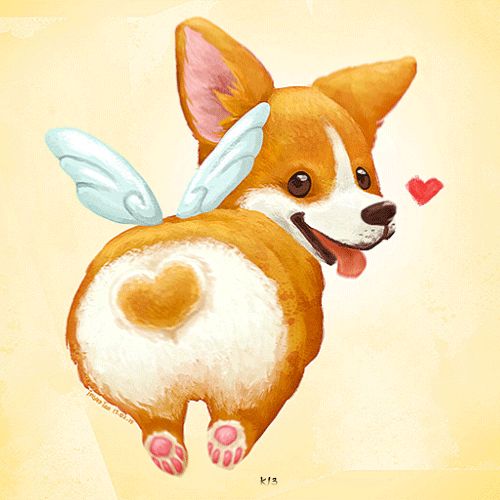
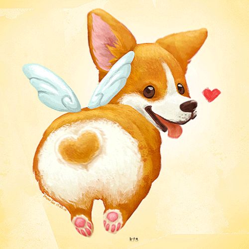

|
Вельш корги пемброк (корги пемброк)
Порода собак вельш корги пемброк - дорогая и редкая, она ценится
любителями собак во всем мире. Как и их собратья породы вельш корги кардиган, пемброк
развивались и формировались в Англии. Существует легенда, которая указывает
на потустороннее, сказочное происхождение этих собак. Ну а звучит эта занятная сказка так:
однажды вечером, дети (брат и сестра) возвращались с прогулки
домой и в чистом поле увидели двух маленьких животных похожих на лис. Подойдя поближе,
они рассмотрели что это были вовсе не лисы, а небольшие собаки, точнее, щенки.
Они взяли очаровательных малышей на руки, и отнесли домой. Щенки отличались необычным окрасом шерсти, короткими ножками, забавными стоячими
ушками и отметками на спине. Тогда папа с мамой объяснили, что это не простые щенки, и что оставили их в поле феи. По словам родителей, феи
использовали этих животных для того, чтобы те тащили их кареты на ночном небе, а
иногда устанавливали седло прямо на спине животного, от чего и появились отметины.
|
 

|
Разумеется, это лишь легенда, сказка, но есть и официальная история
которая гласит, что данная порода появилась в Англии после
посещения викингов. Валлхунд, или шведская скотогонная собака, была привезена
викингами в Уэльс примерно в 9 веке,
и большинство специалистов считает, что именно валлхунд был
прародителем вельш корги. Но есть мнения, утверждающие будто порода произошла
от собак, завезённых
фламандскими ткачами.
Сейчас никто не использует данную породу для того, чтобы пасти овец – учитывая стоимость одной собаки, это было бы огромной роскошью.
Ну или каждая из овец должна иметь золотое руно вместо обычной шерсти. Порода пользуется
благосклонностью семьи английской королевы Елизаветы - ее величество является
поклонницей этих милых питомцев.
|